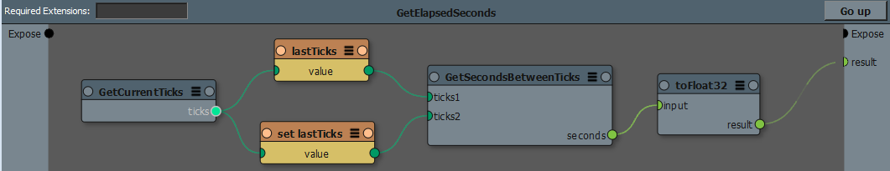

変数（Variable）¶
注釈
ユーザガイド内 Variables により平易な説明があります。
変数は、グラフ内で名前付きコンテナを宣言し使用するためのものです。変数は状態を表す値を保持し、グラフ評価をまたいで存在します。
変数は様々に活用できます。
カウンターやシミュレーションなどのように、評価から次の評価へと値を更新していくような、グラフ所有の値の作成。
ポートを削減します。サブグラフ深部へと共通のコンテクストデータを受け渡す（expose）ためのポート ―例えば currentFrameIndex のようなポートを減らします。たとえば親グラフをサブグラフのため親グラフの評価コンテクストで設定し、クロージャーを実装し、実現します。
一意な、共有可能な値として使用する：KLオブジェクトは他のグラフからアクセス可能な変数として作られ、共有保存場所として使用できる。（ 変数のスコープ 参照）
グラフ評価間をまたぎ状態を保存、共有できる一方、値そのものはグラフに保存されません。グラフが読み込まれると、変数の値は常に初期値へとリセットされます。
警告
変数は、より強力なグラフの作成に用いる事ができる一方、変数の「状態を持つ」という性質により、慎重に使用しないとデバッグや再現を困難にしてしまう恐れがあります。
変数ノード（Variable nodes）¶
読み取り（get）/ 書き込み（set）のため、変数は初めに new variable ノードとして宣言される必要があります。（ 変数ノードの作成 参照）変数ノードは、その変数の値を get / set するため実際の値のコンテナの在り処を保持します。
new variable ノードは初期値を決定する入力ポートを１つもちます。グラフ評価の一番初めに値を引いてきます。このノードは、ノードの現在の値を返し、 get ノード同様の振舞をします。ただし、 new variable の出力は効果的な変数の宣言のため、接続されている必要はありません。
set ノードは変数の値を変更し、新しい値を出力として返します。 get ノードは、変数の現在の値を返す出力ポートを１つのみ持ちます。 set と get の実行順もしくはポートの順は、極めて重要です。なぜなら get ノードの値は set ノードの前後どちらで実行されるかにより変化するためです。 get ノードが set ノードの左 ―つまり上流に接続されていると、 set より先に実行されることが保証されます。いっぽう、他の状況では実行順が期待通りになるか注意が必要です。
注釈
get、 set ノードが未宣言、もしくはアクセス不能な変数（ 変数のスコープ 参照）を参照してしまう場合、エラー 、たとえば : Node ‘get’: unable to resolve var path ‘A’ と表示されます。このエラーは変数がアクセス可能になると直ぐ解決されます。
変数ノードの作成¶
Canvas アプリケーションでは、変数ノードは以下の方法で作成します。
Canvas グラフウィンドウより、右クリックのコンテキストメニューから：
New Variable により New Variable ダイアログが表示され、現在のグラフに新しい変数を定義します。
Read Variable (Get) により get variable ノードを追加します。
Write Variable (Set) により set variable ノードを追加します。
Canvas グラフウィンドより、 Tab キーを押し検索ウィジェットを開き：
“var.” とキー入力し、 New Variable ダイアログから現在のグラフに変数を定義します。
“get.” とキー入力し、現在のグラフよりアクセス可能な変数一覧を得、必要な変数を選び get ノードを作成します。
“set.” とキー入力し、現在のグラフよりアクセス可能な変数一覧を得、必要な変数を選び set ノードを作成します。
エクスプローラウィンドより、 Variables を開き、現在のグラフ中に存在する変数のパスを得ます。Canvas グラフウィンドにドラッグ・アンド・ドロップし、 get variable ノードをそのノードの absolute path 付で作成します。
変数のスコープ¶
変数はその変数を定義（new variable ノード）したグラフからは常にアクセス可能な一方、それ以外のグラフからは、シンプルなスコープのルールに則ったアクセスが可能です。
get 、 set ノードを変数に紐付けるため、変数のパスはアクセス可能に解決される必要があります。初めに同じグラフ内の変数を検索します。見つからないと、親のグラフ内を検索し、トップグラフまで遡ります。
それでも見つからない場合、変数のパスは 絶対パス として解決されます。これはトップグラフから、そのノードの実際の宣言のあるパスです。例えば、 myGraph.mySubGraph.A となります。
変数は現在のグラフから上に向かって検索されるので、 クロージャー の実装や、子グラフでのオーバーライドが可能になります。例えば、 Time 変数を最上位グラフで定義し、サブグラフではそれ独自の値で Time をリマップするよう実装できます。もちろん、 get Time ノードによりその time 取得できます。
変数名はグラフの編集時に動的に解決されるため、プリセットではそのプリセット内部で変数 (get や set ノード)を宣言しないようにししましょう。変数は親のグラフ内で定義されることを想定しています。
変数 vs キャッシュ¶
キャッシュノードも変数ノードも、グラフ中において状態を持つ値のコンテナとして作成されますが、以下の違いに留意してください：
キャッシュノードは、自身の入力ポートもしくはサブグラフが変更されると再計算されます。変数ノードでは、値は初めての評価時の初期化のみです。このように変数は、あるKLオブジェクトが、全グラフの評価において間違いなく再利用されることを期待し使用することができます。( set variable ノードで新しいオブジェクト割当をしていない場合)
キャッシュノードは、パフォーマンスのためだけに使用するべきです。実際のグラフ評価に影響を与えてはいけません。一方、変数は、評価から次の評価へと変更を蓄積していくため、グラフの挙動に影響を与えます。
例¶
以下の例では GetElapsedSeconds プリセットが、 lastTicks 変数を現在の印として初期化します。すると各評価で、 lastTicks の値は新規更新される値と比較され、毎秒毎に別の値を出力します。
